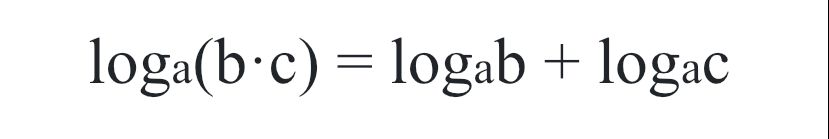
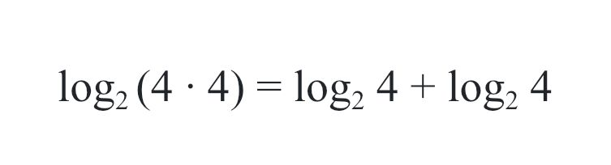
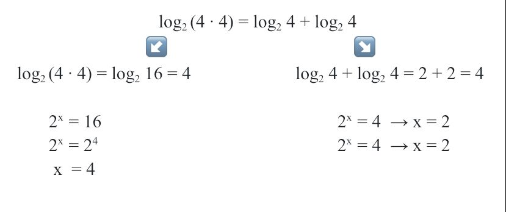
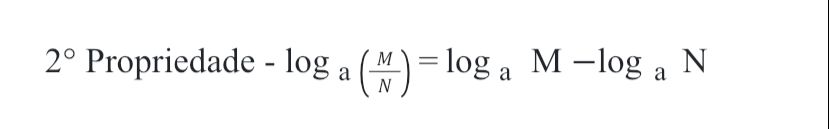
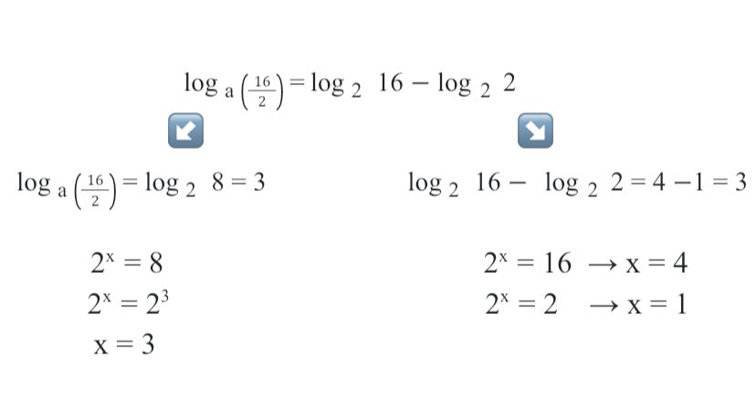
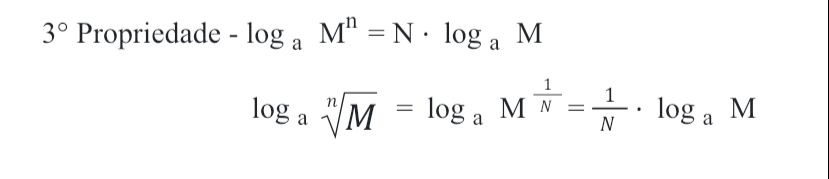
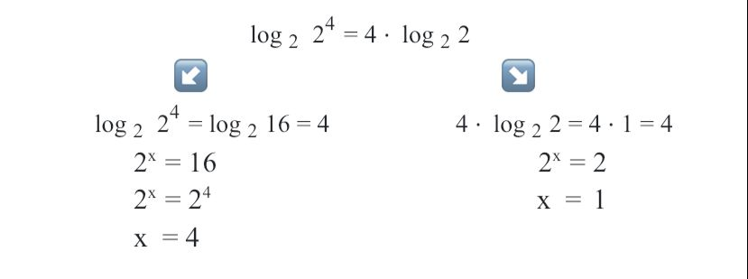
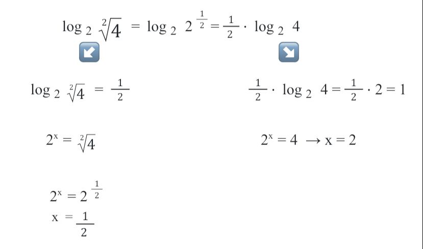
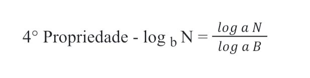
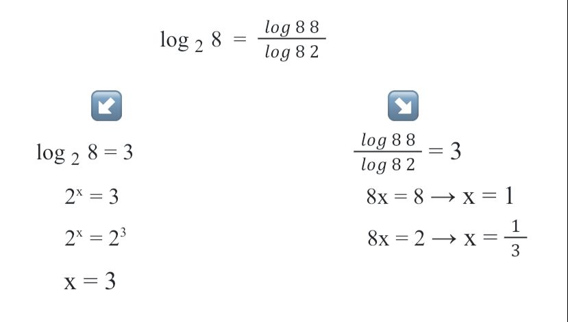

O que é logaritmos? Os logaritmos foram criados a fim de facilitar alguns cálculos que possuiam ou números muito grandes ou muito pequenos
Agora iremos falar sobre as propriedades operatórias dos logaritmos, essas propriedades transformam multiplicações em somas, divisões em subtrações, radioações em divisões e potenciações em multiplicações.
São elas:
1° Propriedade: Logaritmo de um produto
Para resolvermos, basta somar o logaritmo de M na base a e o logaritmo de N na base a.
Vejamos um exemplo:
E para resolver é simples:
2° Propriedade: Logaritmo de um quociente
Para resolvermos, basta subtrairmos o logaritmo do numerador na base a pelo logaritmo do denominador também na base a.
Vejamos um exemplo:
3° Propriedade: Logaritmo de uma potência e raiz
Quando um logaritmo estiver elevado a um expoente, o expoente irá passar multiplicando o resultado do logaritmo.
Vejamos um exemplo:
E agora vejamos quando se tem uma propriedade da raiz de um logaritmo:
4° Propriedade: Mudança de base
Irá ter situações as quais vão ser necessárias o uso de uma calculadora, de preferência científica.
E essas foram as propriedades operatórias dos logaritmos, escolhi esse conteúdo pois ele é muito importante para a resolução de várias equações logarítmicas, é um pouco complexo mas com prática é bem fácil.